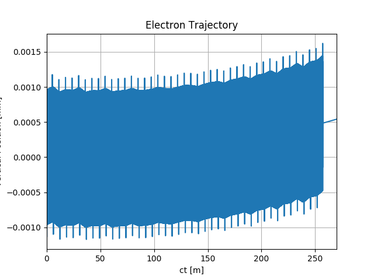
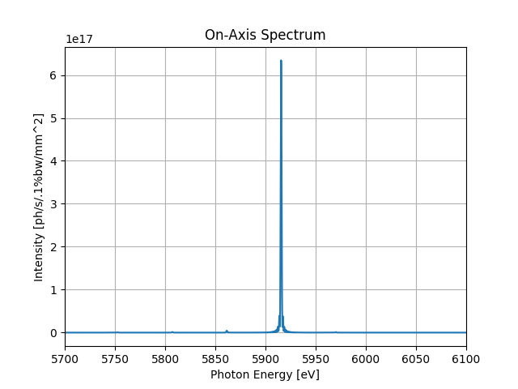
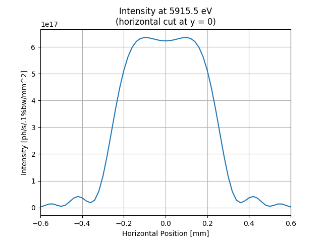
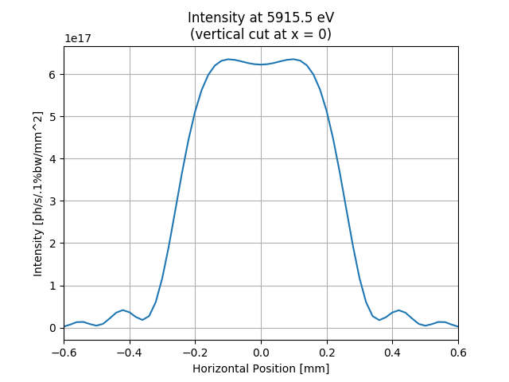

Note
Click here to download the full example code
SRW Example #5¶
Problem¶
Calculating electron trajectory and spontaneous emission from a very long segmented undulator (transversely-uniform magnetic field defined)
Example Solution¶
- 
- 

- 
- 
Out:
SRWLIB Python Example # 5:
Calculating electron trajectory in long segmented undulator, and the corresponding single-electron on-axis spectrum and intensity distribution at fundamental harmonic
Reading magnetic field data from file ... done
Performing Trajectory calculation ... done
Saving Trajectory data to a file ... done
Performing Electric Field calculation ... done
Extracting Intensity from calculated Electric Field ... done
Performing Electric Field calculation ... done
Extracting Intensity from calculated Electric Field ... done
Saving intensity data to files ... done
Plotting the results (blocks script execution; close any graph windows to proceed) ... done
from __future__ import print_function #Python 2.7 compatibility
from srwpy.srwlib import *
from srwpy.uti_plot import *
import os
print('SRWLIB Python Example # 5:')
print('Calculating electron trajectory in long segmented undulator, and the corresponding single-electron on-axis spectrum and intensity distribution at fundamental harmonic')
#**********************Input Parameters:
strExDataFolderName = 'data_example_05' #example data sub-folder name
arFldInFileName = 'segmented.dat' #3D Magnetic Field data file names
strTrajOutFileName = 'ex05_res_traj.dat' #file name for output trajectory data
strIntOutFileName1 = 'ex05_res_int1.dat' #file name for output SR intensity data
strIntOutFileName2 = 'ex05_res_int2.dat' #file name for output SR intensity data
#**********************Auxiliary function to read tabulated 3D Magnetic Field data from ASCII file:
def AuxReadInMagFld3D(filePath, sCom):
f = open(filePath, 'r')
f.readline() #1st line: just pass
xStart = float(f.readline().split(sCom, 2)[1]) #2nd line: initial X position [m]; it will not actually be used
xStep = float(f.readline().split(sCom, 2)[1]) #3rd line: step vs X [m]
xNp = int(f.readline().split(sCom, 2)[1]) #4th line: number of points vs X
yStart = float(f.readline().split(sCom, 2)[1]) #5th line: initial Y position [m]; it will not actually be used
yStep = float(f.readline().split(sCom, 2)[1]) #6th line: step vs Y [m]
yNp = int(f.readline().split(sCom, 2)[1]) #7th line: number of points vs Y
zStart = float(f.readline().split(sCom, 2)[1]) #8th line: initial Z position [m]; it will not actually be used
zStep = float(f.readline().split(sCom, 2)[1]) #9th line: step vs Z [m]
zNp = int(f.readline().split(sCom, 2)[1]) #10th line: number of points vs Z
totNp = xNp*yNp*zNp
locArBx = array('d', [0]*totNp)
locArBy = array('d', [0]*totNp)
locArBz = array('d', [0]*totNp)
for i in range(totNp):
curLineParts = f.readline().split('\t')
locArBx[i] = float(curLineParts[0])
locArBy[i] = float(curLineParts[1])
locArBz[i] = float(curLineParts[2])
f.close()
xRange = xStep
if xNp > 1: xRange = (xNp - 1)*xStep
yRange = yStep
if yNp > 1: yRange = (yNp - 1)*yStep
zRange = zStep
if zNp > 1: zRange = (zNp - 1)*zStep
return SRWLMagFld3D(locArBx, locArBy, locArBz, xNp, yNp, zNp, xRange, yRange, zRange, 1)
#**********************Auxiliary function to write tabulated resulting Trajectory data to ASCII file:
def AuxSaveTrajData(traj, filePath):
f = open(filePath, 'w')
resStr = '#ct [m], X [m], BetaX [rad], Y [m], BetaY [rad], Z [m], BetaZ [rad]'
if(hasattr(traj, 'arBx')):
resStr += ', Bx [T]'
if(hasattr(traj, 'arBy')):
resStr += ', By [T]'
if(hasattr(traj, 'arBz')):
resStr += ', Bz [T]'
f.write(resStr + '\n')
ctStep = 0
if traj.np > 0:
ctStep = (traj.ctEnd - traj.ctStart)/(traj.np - 1)
ct = traj.ctStart
for i in range(traj.np):
resStr = str(ct) + '\t' + repr(traj.arX[i]) + '\t' + repr(traj.arXp[i]) + '\t' + repr(traj.arY[i]) + '\t' + repr(traj.arYp[i]) + '\t' + repr(traj.arZ[i]) + '\t' + repr(traj.arZp[i])
if(hasattr(traj, 'arBx')):
resStr += '\t' + repr(traj.arBx[i])
if(hasattr(traj, 'arBy')):
resStr += '\t' + repr(traj.arBy[i])
if(hasattr(traj, 'arBz')):
resStr += '\t' + repr(traj.arBz[i])
f.write(resStr + '\n')
ct += ctStep
f.close()
#**********************Auxiliary function to write tabulated resulting Intensity data to ASCII file:
#replaced by srwlib.srwl_uti_save_intens_ascii
#def AuxSaveIntData(arI, mesh, filePath):
# f = open(filePath, 'w')
# f.write('#C-aligned Intensity (inner loop is vs photon energy, outer loop vs vertical position)\n')
# f.write('#' + repr(mesh.eStart) + ' #Initial Photon Energy [eV]\n')
# f.write('#' + repr(mesh.eFin) + ' #Final Photon Energy [eV]\n')
# f.write('#' + repr(mesh.ne) + ' #Number of points vs Photon Energy\n')
# f.write('#' + repr(mesh.xStart) + ' #Initial Horizontal Position [m]\n')
# f.write('#' + repr(mesh.xFin) + ' #Final Horizontal Position [m]\n')
# f.write('#' + repr(mesh.nx) + ' #Number of points vs Horizontal Position\n')
# f.write('#' + repr(mesh.yStart) + ' #Initial Vertical Position [m]\n')
# f.write('#' + repr(mesh.yFin) + ' #Final Vertical Position [m]\n')
# f.write('#' + repr(mesh.ny) + ' #Number of points vs Vertical Position\n')
# for i in range(mesh.ne*mesh.nx*mesh.ny): #write all data into one column using "C-alignment" as a "flat" 1D array
# f.write(' ' + repr(arI[i]) + '\n')
# f.close()
#**********************Defining Magnetic Field:
xcID = 0 #Transverse Coordinates of ID Center [m]
ycID = 0
zcID = 0 #Longitudinal Coordinate of ID Center [m]
magFldCnt = SRWLMagFldC() #Container
magFldCnt.allocate(1) #Magnetic Field consists of 1 part
print(' Reading magnetic field data from file ... ', end='')
filePath = os.path.join(os.getcwd(), strExDataFolderName, arFldInFileName)
magFldCnt.arMagFld[0] = AuxReadInMagFld3D(filePath, '#')
print('done')
magFldCnt.arXc[0] = xcID
magFldCnt.arYc[0] = ycID
magFldCnt.arZc[0] = zcID
magFldCnt.arMagFld[0].nRep = 1 #Entire ID
#**********************Trajectory structure (where the results will be stored)
part = SRWLParticle()
part.x = 0.0 #Initial Transverse Coordinates (initial Longitudinal Coordinate will be defined later on) [m]
part.y = 0.0
part.z = -129.027 #Initial Longitudinal Coordinate (set before the ID)
part.xp = 0 #Initial Transverse Velocities
part.yp = 0
part.gamma = 17.5/0.51099890221e-03 #Relative Energy
part.relE0 = 1 #Electron Rest Mass
part.nq = -1 #Electron Charge
partTraj = SRWLPrtTrj()
partTraj.partInitCond = part
npTraj = 537001 #Number of Points for Trajectory calculation
partTraj.allocate(npTraj)
partTraj.ctStart = 0.0 #Start Time for the calculation
partTraj.ctEnd = 270.0 #End Time
#**********************Calculation (SRWLIB function call)
print(' Performing Trajectory calculation ... ', end='')
partTraj = srwl.CalcPartTraj(partTraj, magFldCnt, 0)
print('done')
#**********************Saving trajectory results
print(' Saving Trajectory data to a file ... ', end='')
AuxSaveTrajData(partTraj, os.path.join(os.getcwd(), strExDataFolderName, strTrajOutFileName))
print('done')
#**********************Electron Beam
elecBeam = SRWLPartBeam()
elecBeam.Iavg = 0.5 #Average Current [A]
elecBeam.partStatMom1 = part
#**********************Precision parameters for SR calculation
meth = 1 #SR calculation method: 0- "manual", 1- "auto-undulator", 2- "auto-wiggler"
relPrec = 0.01 #relative precision
zStartInteg = 0 #-129.029 #part.z - 0.1 #longitudinal position to start integration (effective if < zEndInteg)
zEndInteg = 0 #129.029 #part.z + 5.3 #longitudinal position to finish integration (effective if > zStartInteg)
#* Already specified before : npTraj
useTermin = 1 #Use "terminating terms" (i.e. asymptotic expansions at zStartInteg and zEndInteg) or not (1 or 0 respectively)
sampFactNxNyForProp = 0 #sampling factor for adjusting nx, ny (effective if > 0)
arPrecPar = [meth, relPrec, zStartInteg, zEndInteg, npTraj, useTermin, sampFactNxNyForProp]
#**********************Wavefront
wfr1 = SRWLWfr() #For spectrum vs photon energy
wfr1.allocate(5000, 1, 1) #Numbers of points vs Photon Energy, Horizontal and Vertical Positions
wfr1.mesh.zStart = 300. #Longitudinal Position [m] at which SR has to be calculated
wfr1.mesh.eStart = 5700.0 #Initial Photon Energy [eV]
wfr1.mesh.eFin = 6100.0 #Final Photon Energy [eV]
wfr1.mesh.xStart = 0. #Initial Horizontal Position [m]
wfr1.mesh.xFin = 0 #Final Horizontal Position [m]
wfr1.mesh.yStart = 0 #Initial Vertical Position [m]
wfr1.mesh.yFin = 0 #Final Vertical Position [m]
wfr1.partBeam = elecBeam
wfr2 = SRWLWfr() #For intensity distribution at fixed photon energy
wfr2.allocate(1, 61, 61) #Numbers of points vs Photon Energy, Horizontal and Vertical Positions
wfr2.mesh.zStart = 300. #Longitudinal Position [m] at which SR has to be calculated
wfr2.mesh.eStart = 5915.5 #Initial Photon Energy [eV]
wfr2.mesh.eFin = 5915.5 #Final Photon Energy [eV]
wfr2.mesh.xStart = -0.0006 #Initial Horizontal Position [m]
wfr2.mesh.xFin = 0.0006 #Final Horizontal Position [m]
wfr2.mesh.yStart = -0.0006 #Initial Vertical Position [m]
wfr2.mesh.yFin = 0.0006 #Final Vertical Position [m]
wfr2.partBeam = elecBeam
#**********************Calculation (SRWLIB function calls)
print(' Performing Electric Field calculation ... ', end='')
#srwl.CalcElecFieldSR(wfr1, partTraj, magFldCnt, arPrecPar)
srwl.CalcElecFieldSR(wfr1, 0, magFldCnt, arPrecPar)
print('done')
print(' Extracting Intensity from calculated Electric Field ... ', end='')
arI1 = array('f', [0]*wfr1.mesh.ne)
srwl.CalcIntFromElecField(arI1, wfr1, 6, 0, 0, wfr1.mesh.eStart, wfr1.mesh.xStart, wfr1.mesh.yStart)
print('done')
print(' Performing Electric Field calculation ... ', end='')
srwl.CalcElecFieldSR(wfr2, 0, magFldCnt, arPrecPar)
print('done')
print(' Extracting Intensity from calculated Electric Field ... ', end='')
arI2 = array('f', [0]*wfr2.mesh.nx*wfr2.mesh.ny) #"flat" array to take 2D intensity data
srwl.CalcIntFromElecField(arI2, wfr2, 6, 0, 3, wfr2.mesh.eStart, 0, 0)
print('done')
#**********************Saving results
print(' Saving intensity data to files ... ', end='')
#AuxSaveIntData(arI1, wfr1.mesh, os.path.join(os.getcwd(), strExDataFolderName, strIntOutFileName1))
srwl_uti_save_intens_ascii(arI1, wfr1.mesh, os.path.join(os.getcwd(), strExDataFolderName, strIntOutFileName1), 0)
#AuxSaveIntData(arI2, wfr2.mesh, os.path.join(os.getcwd(), strExDataFolderName, strIntOutFileName2))
srwl_uti_save_intens_ascii(arI2, wfr2.mesh, os.path.join(os.getcwd(), strExDataFolderName, strIntOutFileName2), 0)
print('done')
#**********************Plotting results (requires 3rd party graphics package)
print(' Plotting the results (blocks script execution; close any graph windows to proceed) ... ', end='')
ctMesh = [partTraj.ctStart, partTraj.ctEnd, partTraj.np]
for i in range(partTraj.np): partTraj.arY[i] *= 1000
uti_plot1d(partTraj.arY, ctMesh, ['ct [m]', 'Vertical Position [mm]', 'Electron Trajectory'])
uti_plot1d(arI1, [wfr1.mesh.eStart, wfr1.mesh.eFin, wfr1.mesh.ne], ['Photon Energy [eV]', 'Intensity [ph/s/.1%bw/mm^2]', 'On-Axis Spectrum'])
plotMeshX = [1000*wfr2.mesh.xStart, 1000*wfr2.mesh.xFin, wfr2.mesh.nx]
plotMeshY = [1000*wfr2.mesh.yStart, 1000*wfr2.mesh.yFin, wfr2.mesh.ny]
uti_plot2d(arI2, plotMeshX, plotMeshY, ['Horizontal Position [mm]', 'Vertical Position [mm]', 'Intensity at ' + str(wfr2.mesh.eStart) + ' eV'])
arI2x = array('f', [0]*wfr2.mesh.nx) #array to take 1D intensity data
srwl.CalcIntFromElecField(arI2x, wfr2, 6, 0, 1, wfr2.mesh.eStart, 0, 0)
uti_plot1d(arI2x, plotMeshX, ['Horizontal Position [mm]', 'Intensity [ph/s/.1%bw/mm^2]', 'Intensity at ' + str(wfr2.mesh.eStart) + ' eV\n(horizontal cut at y = 0)'])
arI2y = array('f', [0]*wfr2.mesh.ny) #array to take 1D intensity data
srwl.CalcIntFromElecField(arI2y, wfr2, 6, 0, 2, wfr2.mesh.eStart, 0, 0)
uti_plot1d(arI2y, plotMeshY, ['Horizontal Position [mm]', 'Intensity [ph/s/.1%bw/mm^2]', 'Intensity at ' + str(wfr2.mesh.eStart) + ' eV\n(vertical cut at x = 0)'])
uti_plot_show() #show all graphs (blocks script execution; close all graph windows to proceed)
print('done')
Total running time of the script: ( 0 minutes 27.275 seconds)